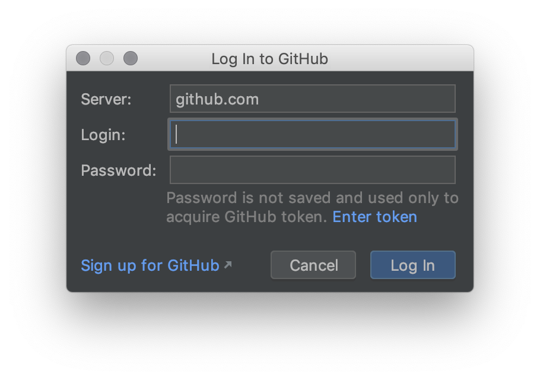
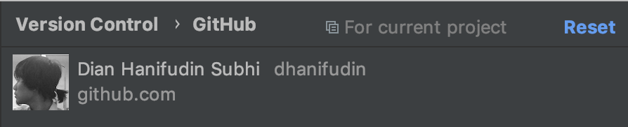
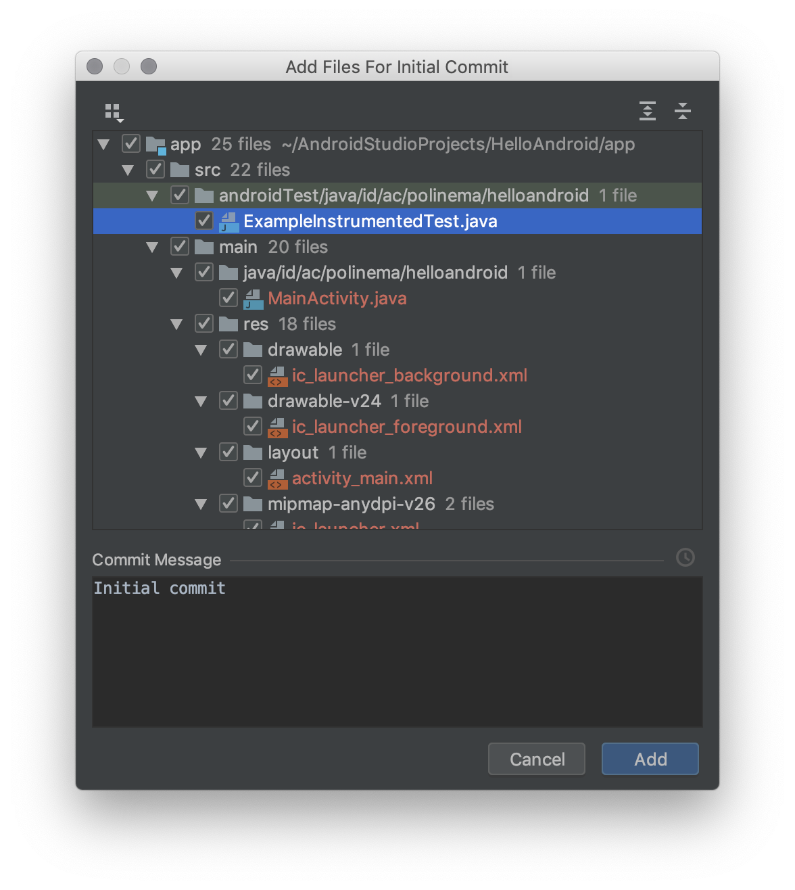
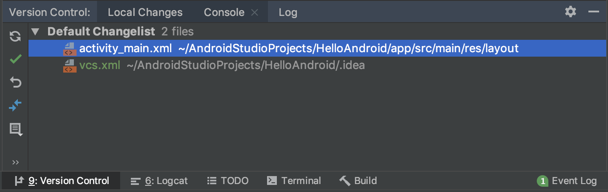
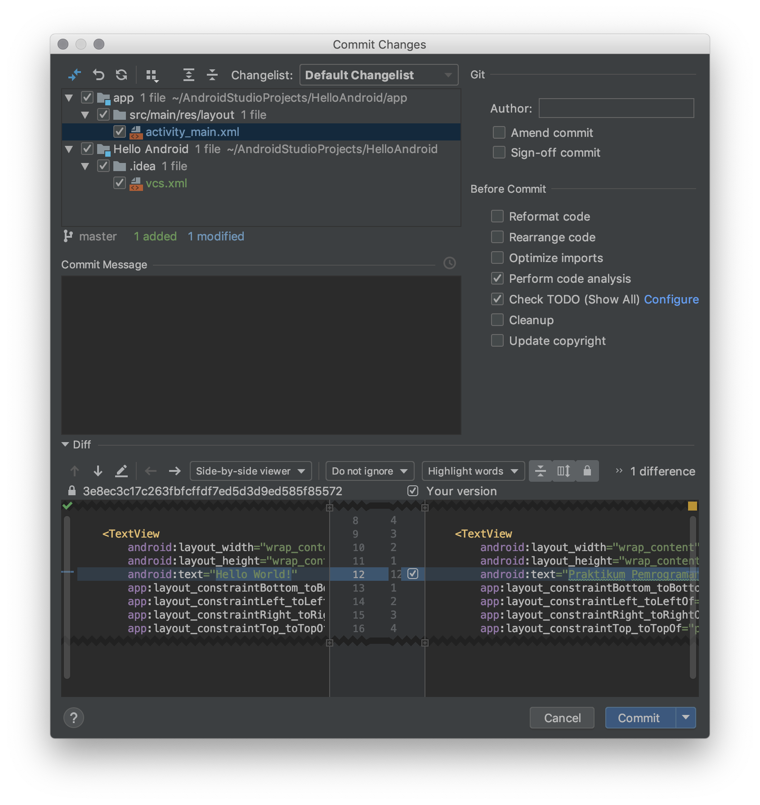

Version Control
Pada sub bab ini akan dijelaskan mengenai version control pada Android Studio, Version control adalah sebuah fitur untuk mengatur history kode program yang kita buat. Android studio menyediakan support untuk berbagai macam version control pada pertemuan kali ini akan dibahas mengenai Git dan Local History.
Git
Git adalah Version Control System (VCS) terdistribusi yang diciptakan oleh Linus Torvalds. Digunakan sebagai perkakas bantu untuk bekerja antar para programmer. Git digunakan untuk melacak perubahan pada berkas-berkas code. Pada praktikum ini digunakan GitHub yang merupakan salah satu penyedia layanan Git di cloud.
Akun GitHub
Sebelum melakukan langkah-langkah berikut, pastikan anda telah memiliki akun GitHub terlebih dahulu. Untuk melakukan registrasi silahkan klik tautan Join GitHub berikut. Kemudian lengkapi formulir isian yang dibutuhkan.
Setup GitHub pada Android Studio
Pada praktikum pemrograman mobile, digunakan Android Studio sebagai Git Client. Terdapat beberapa langkah untuk menyiapkannya. Silahkan ikuti langkah-langkah berikut:
- Buka aplikasi terminal (cmd) pada sistem operasi anda
- Untuk memeriksa apakah sudah terdapat setting akun Git, jalankan perintah
git config --global --get user.email. Jika hasil perintah kosong, maka anda perlu mengkonfigurasi akun Git terlebih dahulu. Jalankan perintah di bawah ini untuk mengatur informasi akun Git berupa email (email akun GitHub) dan nama anda.
git config --global user.email "<youremail>@email.com" git config --global user.name "<your name>"Buka aplikasi Android Studio, kemudian masuk ke Settings.
Filter settings dengan keyword
github, dan pilih menuGitHubpada bagian Version Control.
Tambahkan akun baru dengan menekan Add Account, dan lengkapi informasi login dengan akun GitHub anda.

Jika proses login berhasil maka akan muncul akun profil GitHub anda.

Proses setup akun GitHub telah selesai.
Membuat Repository GitHub via Android Studio
- Bukalah project Hello Android pada praktikum minggu lalu.
- Tunggu proses build hingga selesai.
Klik menu VCS -> Import into Version Control -> Share Project on GitHub

Jika anda perhatikan, maka ada pesan error yang muncul. Nama repository tidak mengijinkan adanya karakter spasi, ubah nama repository sehingga pesan error tidak muncul kembali. Kemudian tekan tombol Share.
Tunggu proses sampai muncul dialog untuk konfirmasi menambahkan files ke repository. Terdapat isian Commit Message yang digunakan untuk memberikan deskripsi perubahan apa yang telah dilakukan.

Tekan tombol Add untuk menambahkan perubahan file. Tunggu proses hingga keluar notifikasi pada Android Studio seperti pada gambar berikut.
Bukalah fiile
activity_main.xmlkemudian ubah pesanHello World!menjadiPraktikum Pemrograman Mobile.Perhatikan pada bagian bawah Android Studio terdapat toolbar Version Control. Buka toolbar tersebut atau anda dapat menggunakan shortcut
Ctrl + 9(Cmd + 9bagi pengguna OSX). Pada toolbar tersebut mencatat semua perubahan file yang terjadi dalam satu repository.
Pilih file yang perubahannya ingin dicatat, kemudian tekan menu

Akan muncul dialog yang menunjukkan file yang akan di-commit serta perbedaan (diff) file dengan versi file sebelumnya. Pada isian Commit Message digunakan untuk memberikan informasi perubahan. Silahkan isi pesan sesuai dengan perubahan yang dilakukan, contoh:
Merubah pesan menjadi Praktikum Pemrograman Mobile. Kemudian tekan tombol Commit untuk melakukan commit.